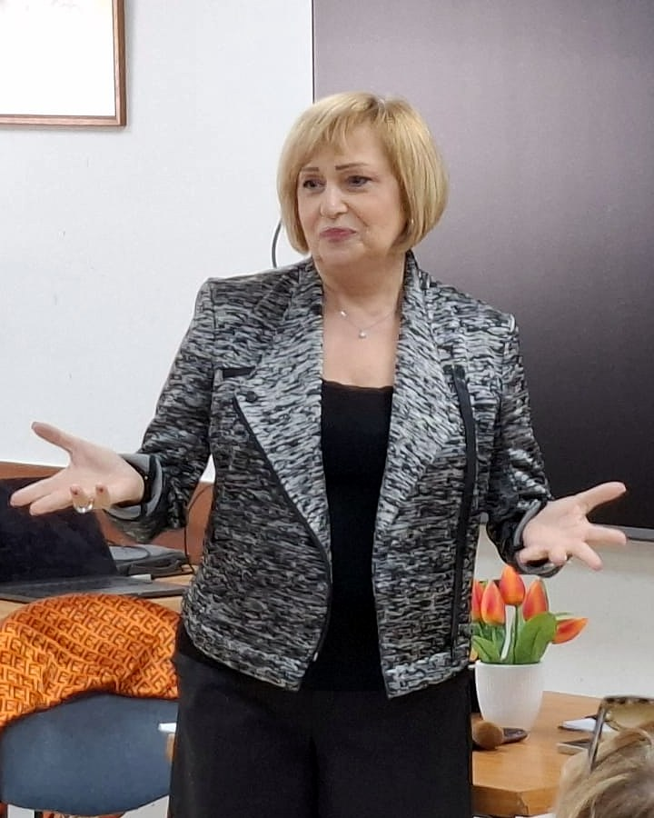
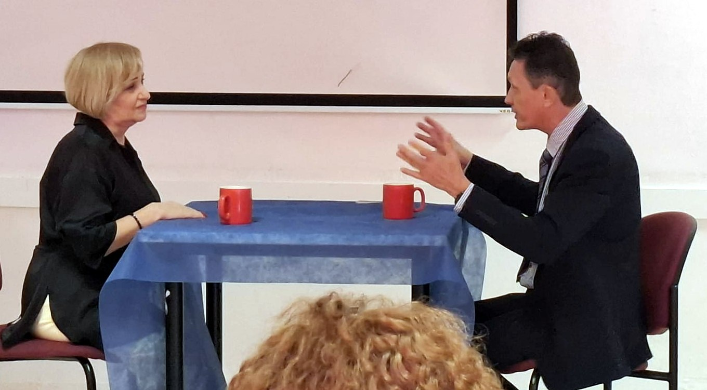

הסיפור שלי
שמי קרן פרידמן.
מנחת קבוצות מוסמכת לזוגיות ומערכות יחסים
התחלתי לחפש דרך לראות ולגלות את היופי הפנימי של האדם.
במקצועי הראשון אני מורה למוזיקה. כשעליתי לארץ עשיתי הסבה לתחום הקוסמטיקה, ולאורך השנים עבדתי בעולם המכירות והיופי — בין היתר כדיילת יופי של מותגי יוקרה וכמוכרת תכשיטי יוקרה.
ידעתי שאני נמשכת לעולם היופי. אבל עם הזמן הבנתי שהיופי שאני עוסקת בו הוא חיצוני בלבד — והתחלתי לחפש דרך לראות ולגלות את היופי הפנימי של האדם.
החיפוש הזה הפך לעמוק ומשמעותי במיוחד כשחוויתי קשיים בחיים האישיים ומערכת יחסים זוגית לא מוצלחת. מתוך המשבר התחלתי ללמוד ולחקור שיטות רוחניות שונות, ביניהן לימודי תקשור ולימודי חוכמת הקבלה. התחברתי מאוד לחוכמת הקבלה: למדתי מהו "עולם הנסתר" — ובעיקר איך אנחנו מגלים אותו לא בתיאוריה, אלא בחיי היומיום שלנו, בתוך הקשרים שלנו עם אנשים.
במסגרת לימודי הקבלה סיימתי קורס מנחים מוסמך וקיבלתי תעודת הנחיה. במהלך שלוש שנים של הנחיית קורסים בנושא זוגיות, התחזקה בי ההבנה כי תחום זה הוא שליחות עבורי. מתוך חיבור עמוק לנושא, בחרתי להפוך אותו למקצוע ולדרך חיים. הגעתי לכאן מתוך רצון להתפתח מקצועית ולהביא ערך מוסף, ניסיון וידע שיוכלו לתרום לארגון.
הסיפוק והפידבק הכי גדולים בשבילי הם לראות את התגובות של המשתתפים והמשתתפות בסדנאות — לשמוע איך הטיפים, הכלים וההבנות על מערכות יחסים פוגשים אותם בחיים עצמם ומשנים את האווירה בבית.
